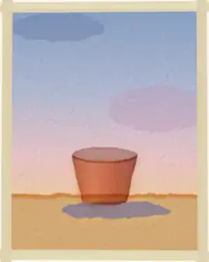

Crear vídeos con IA: de una idea a un vídeo listo para publicar
Escribe una frase. Nilo Studio IA escribe el guion, pone la voz, anima cada escena, añade subtítulos y te entrega el vídeo vertical terminado.
Tres pasos para crear un vídeo con IA
No necesitas saber editar ni pasar horas en un editor. Nilo Studio IA es una app para Mac que usa tu plan de Claude como motor creativo y hace todo el trabajo de producción por ti.
- 1. Escribe tu idea. Un tema, una pregunta o un dato curioso. También puedes pedir ideas de tu nicho que ya están funcionando.
- 2. La IA lo produce. Guion con gancho, voz natural, animación en el estilo que elijas, subtítulos dinámicos y portada.
- 3. Revisa y publica. Ajusta lo que quieras y publícalo o prográmalo en TikTok, Instagram, Facebook y YouTube.
Todo el vídeo, no solo una parte
La mayoría de herramientas de vídeo con IA resuelven una pieza: subtítulos, recortes o un avatar. Nilo Studio IA crea el vídeo completo de principio a fin.
- Guion con gancho: los primeros segundos están pensados para retener.
- Voz con IA: narración natural en español y otros idiomas.
- Animación: más de 180 estilos, de acuarela a anime, pixel art o claymation.
- Subtítulos dinámicos: palabras clave resaltadas y estilos a tu gusto.
- Apoyo visual: fotos, gráficos e ilustraciones que explican lo que dices, incluso a pantalla completa.
- Portada y textos: miniatura, descripción y hashtags para cada red.



Edita tus vídeos con IA
Si ya grabaste, sube tus clips, fotos o notas de voz a Nilo Cut: ordena la historia, corta silencios y muletillas, añade subtítulos y apoyo visual. Es como CapCut, pero edita por ti.
Lo que más se pregunta.
¿Cómo crear vídeos con IA para TikTok?
Con Nilo Studio IA escribes una idea y la app genera el vídeo vertical 9:16 con guion, voz, animación y subtítulos. Luego lo publicas o lo programas en TikTok desde la misma app.
¿Qué necesito para crear vídeos con Nilo Studio IA?
Un Mac con macOS 12 o superior y tu plan de Claude Pro o Max, que es el motor que escribe y anima. Por ahora no hay versión para Windows.
¿Puedo crear vídeos con IA sin mostrar mi cara?
Sí. Puedes crear vídeos animados con voz de IA (formato faceless) o usar tus propios clips si prefieres salir en cámara.
¿En qué idiomas crea los vídeos?
En español y en otros idiomas: el guion, la voz y los subtítulos siguen el idioma que elijas.
¿Sirve para Reels de Instagram y YouTube Shorts?
Sí. Los vídeos son verticales y se publican en TikTok, Instagram, Facebook y YouTube.
Tu idea, hecha vídeo y publicada.
Nilo Studio IA crea, edita, programa y publica tus vídeos verticales desde tu Mac.
Más guías: Automatizar y programarEstilosAlternativas · Funciones